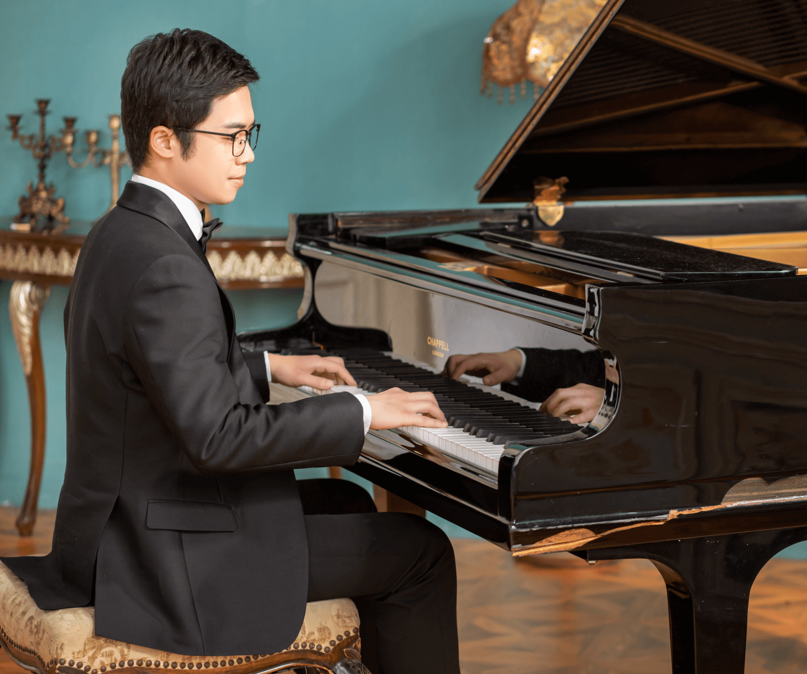
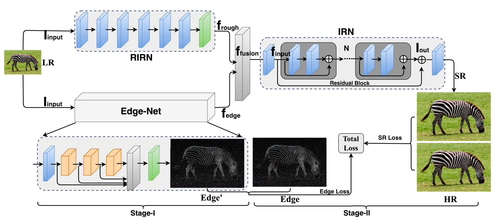
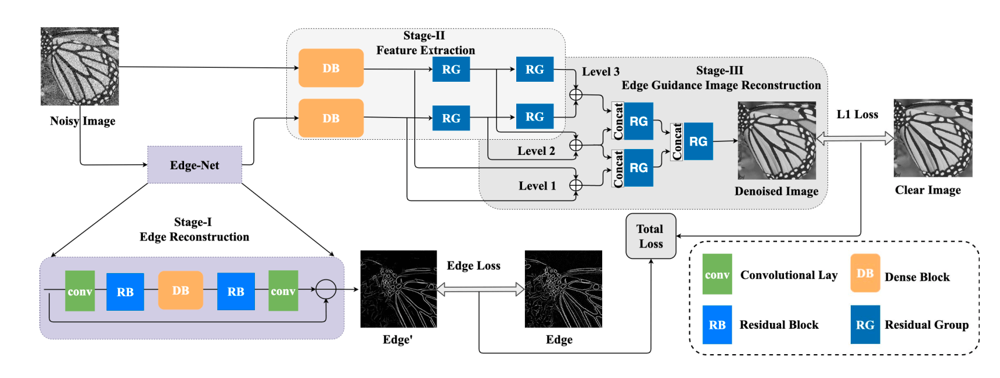
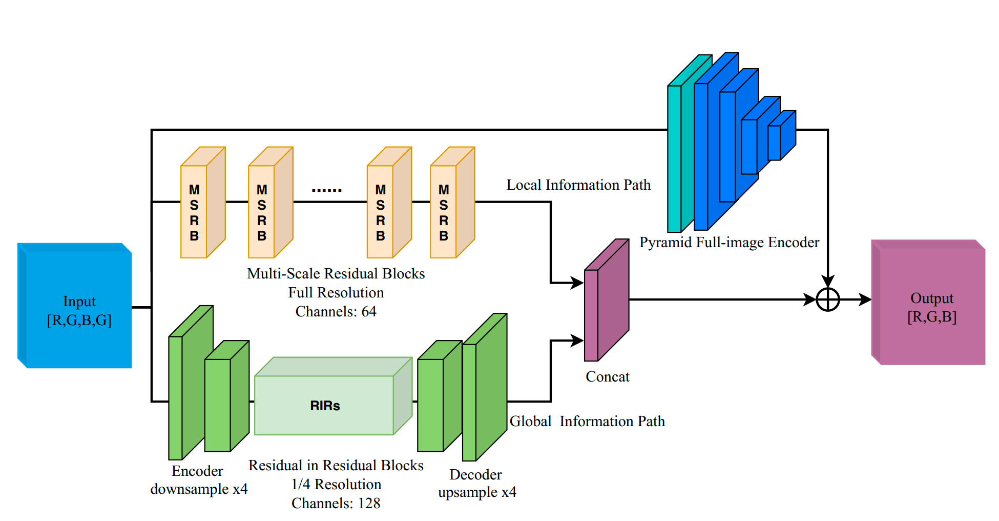
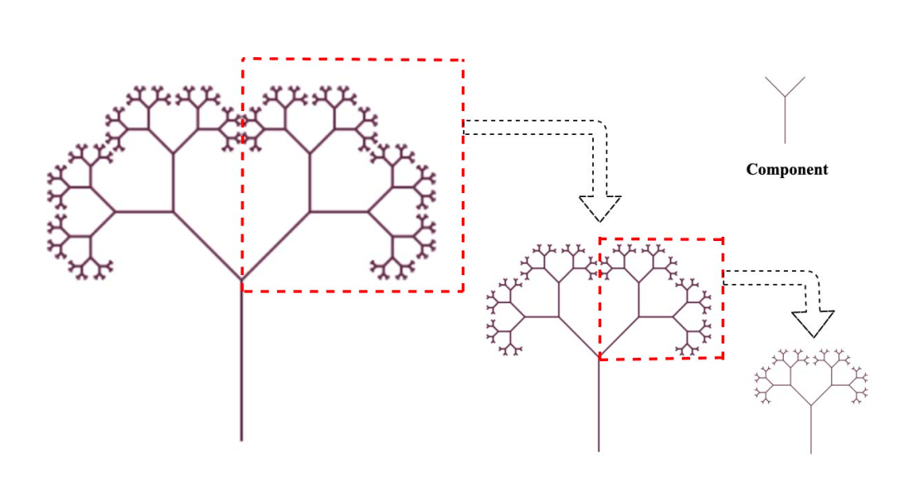
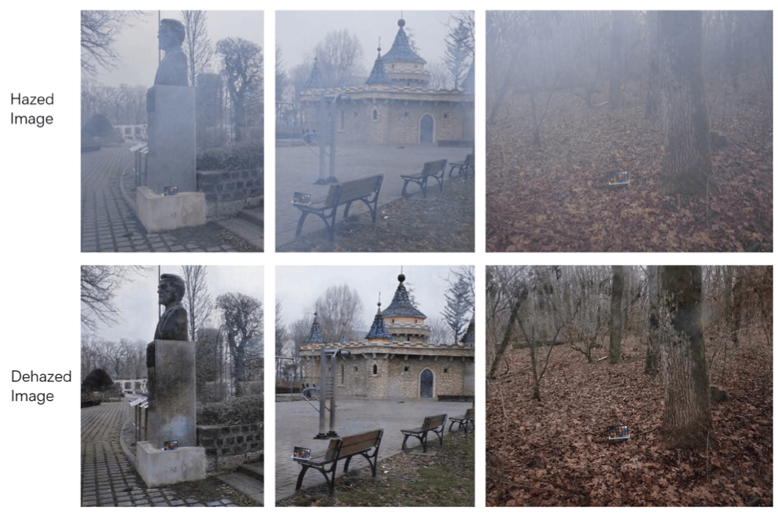
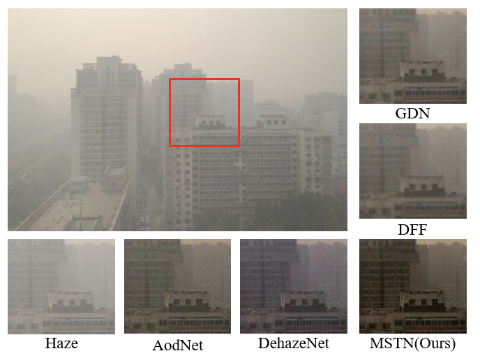
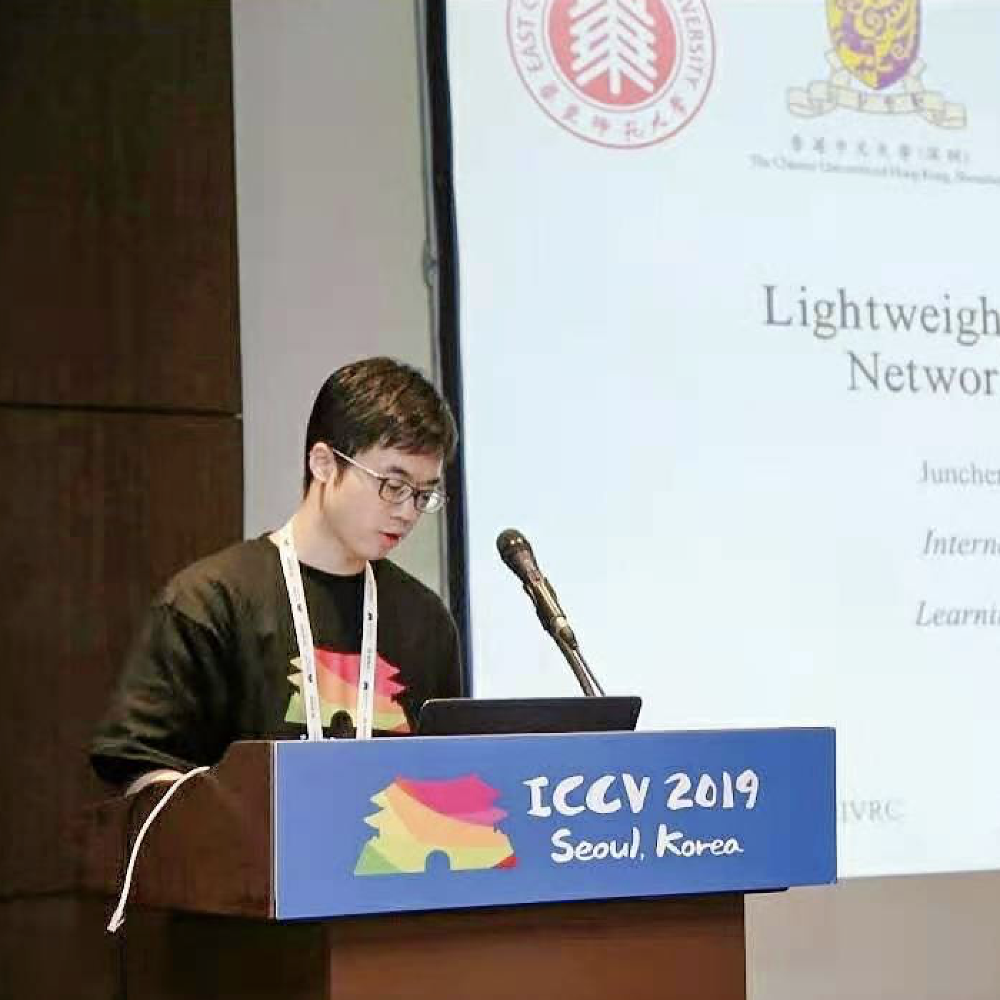

李俊诚 (Li Juncheng)
博士研究生
计算机科学与技术学院
华东师范大学
中山北路3663号,
上海, 中国, 200062.
ORCID: 0000-0001-7314-6754
邮箱: cvjunchengli@gmail.com
成功不是终结，失败也不是，重要的是继续前行的勇气。--温斯顿·丘吉尔
李俊诚 (Li Juncheng)博士研究生
计算机科学与技术学院 成功不是终结，失败也不是，重要的是继续前行的勇气。--温斯顿·丘吉尔 |
 |
我是华东师范大学计算机科学与技术学院的一名在读博士研究生, 由 张桂戌 教授 和 方发明 教授共同指导。 我将于 2021.06 毕业，并于2021.07加入香港中文大学人工智能研究中心担任博后研究员。
我的研究兴趣包括人工智能及其在计算机视觉（例如：图像拼接，图像分割, 人群计数）和图像处理（例如：图像超分辨率，图像去噪, 图像去雾）中的应用。
该网站用于记录我的研究成果，也用于记录我的生活经历。
| 上海市博士优秀毕业生称号, 上海市教委, 2021. |
| 研究奖学金资助, 香港中文大学, 2021. |
| 创智青年称号, 华东师范大学, 2020. (0.5%) |
| 优秀学生称号, 华东师范大学, 2020. (3.0%) |
| 智慧奖学金, 华东师范大学, 2020. (1.5%) |
| 博士生科研创新基金项目, 华东师范大学, 2020. |
| 研究生奖学金, 华东师范大学, 2016-2020. |
| ICCV 旅行资助, 2019. |
| 获得"基于示例的RAW图像到RGB图像映射挑战赛"的感知赛道的全球第一名, (ICCV-AIM), 2019. |
| 获得"基于示例的RAW图像到RGB图像映射挑战赛"的保真赛道的全球第二名, (ICCV-AIM), 2019. |
| 获得"阿里巴巴 - 优酷视频增强和超分辨率挑战赛"全国第四名 和 “极客奖”, (4/1514), 2019. |
| 获得"中国多媒体大会 - 去雾挑战赛"全国第三名, 二等奖, (ChinaMM), 2018. |
| 获得"图像去雾挑战赛"全球第六名 和 “荣誉提名奖”, (CVPR-NTIRE), 2018. |
| 获得 "京东算法挑战赛 - 潜在购买用户预测" 全国第24名, (24/4240), 2017. |
| 明德奖学金, 中国, 2015. (3.0%) |
| 中国大学生计算机设计大赛全国二等奖, 中国, 2014, 2015. |
| 优秀毕业生, 江西师范大学, 2016. |
| 三好学生, 江西师范大学, 2013-2016. (连续4年) |
| 优秀学生, 江西师范大学, 2013-2016. (连续4年) |
| 一等学业奖学金, 江西师范大学, 2013-2016. (连续4年) |

|
MDCN: Multi-scale Dense Cross Network for Image Super-Resolution Juncheng Li, Faming Fang, Jiaqian Li, Kangfu Mei, and Guixu Zhang. IEEE Transactions on Circuits and Systems for Video Technology (IEEE TCSVT), 2020. |
|  | Soft-edge Assisted Network for Single Image Super-Resolution Faming Fang, Juncheng Li*, and Tieyong Zeng. IEEE Transactions on Image Processing (IEEE TIP), 2020. |
|  | Multi-level Edge Features Guided Network for Image Denoisingt Faming Fang, Juncheng Li*, Yiting Yuan, Tieyong Zeng, and Guixu Zhang. IEEE Transactions on Neural Networks and Learning Systems (IEEE TNNLS), 2020. |

|
Luminance-aware Pyramid Network for Low-light Image Enhancement Jiaqian Li#, Juncheng Li#, Faming Fang, Fang Li, and Guixu Zhang. IEEE Transactions on Multimedia (IEEE TMM), 2020. |
|  | HighEr-Resolution Network for Image Demosaicing and Enhancing Kangfu Mei, Juncheng Li, Jiajie Zhang, Haoyu Wu, Jie Li, and Rui Huang. IInternational Conference on Computer Vision Workshop (ICCV Workshop), 2019. |
|  | Lightweight and Accurate Recursive Fractal Network for Image Super-Resolution Juncheng Li, Yiting Yuan, Kangfu Mei, and Faming Fang. International Conference on Computer Vision Workshop (ICCV Workshop), 2019. |

|
Multi-scale Residual Network for Image Super-Resolution Juncheng Li, Faming Fang, Kangfu Mei, and Guixu Zhang. European Conference on Computer Vision (ECCV), 2018. |
|  | Progressive Feature Fusion Network for Realistic Image Dehazing Kangfu Mei, Aiwen Jiang, Juncheng Li, and Mingwen Wang. Asian Conference on Computer Vision (ACCV), 2018. |
| Lightweight Image Super-Resolution with Multi-scale Feature Interaction Network Zhengxue Wang, Guangwei Gao, Juncheng Li, Yi Yu, Huimin Lu arXiv preprint arXiv:2103.13028. |
|
|  | Efficient and Accurate Multi-scale Topological Network for Single Image Dehazing Qiaosi Yi, Juncheng Li, Faming Fang, Aiwen Jiang, Guixu Zhang arXiv preprint arXiv:2102.12135. |
| Scale-Aware Network with Regional and Semantic Attentions for Crowd Counting under Cluttered Background Qiaosi Yi, Yunxing Liu, Aiwen Jiang, Juncheng Li, Kangfu Mei, Mingwen Wang arXiv preprint arXiv:2101.01479. |
|
| Disentangle Perceptual Learning through Online Contrastive Learning Kangfu Mei, Yao Lu, Qiaosi Yi, Haoyu Wu, Juncheng Li, Rui Huang arXiv preprint arXiv:2006.13511. |
|
| IEEE Transactions on Image Processing (TIP, SCI-1) |
| IEEE Transactions on Multimedia (TMM, SCI-1) |
| Information Science (INS, SCI-1) |
| Knowledge-Based Systems (KBS, SCI-1) |
| IEEE Signal Processing Letters (SPL) |
| IEEE Access |
| International Conference on Multimedia and Expo (ICME) |
| British Machine Vision Conference (BMVC) |
| International Conference on Pattern Recognition (ICPR) |
| 计算机视觉基金会（CVF）会员 |
| 中国计算机学会（CCF）会员 |
| 中国图象图形学学会（CSIG）会员 |
| 中国人工智能学会（CAAI）会员 |
| 丛林蜂工作室（CLF Studio）创始人 【非营利学生创新工作室】 |
| MIVRC 创始人 【隶属于CLF-AI的非营利性图像处理中心】 |
|  | Lightweight and Accurate Recursive Fractal Network for Image Super-Resolution IEEE International Conference on Computer Vision (ICCV). |

|
Exploration and Construction of Lightweight Image Restoration Model |
| 研究助理, 深圳大学, 深圳, 中国, 2020. |
| 湖南大学, 长沙, 中国, 2020. |
| 湖南师范大学, 长沙, 中国, 2020. |
| 国防科技大学, 长沙, 中国, 2020. |
| 中国工业与应用数学学会第十八届年会（CSIAM）, 长沙, 中国, 2020. |
| 中国模式识别与计算机视觉学术会议, 南京, 中国, 2020. |
| 智慧地球研讨会, 上海, 中国, 2019. |
| NeurlPS-上海站, 上海, 中国, 2019. |
| 梨花女子大学, 首尔, 韩国, 2019. |
| 国际计算机视觉大会（ICCV）, 首尔, 韩国, 2019. |
| 优酷-视频增强和超分辨率挑战赛, 杭州, 中国, 2019. |
| 研究助理, 香港中文大学, 香港, 中国, 2019. |
| 数字图像及数据科学最新进展研讨会, 上海交通大学, 上海, 中国, 2019. |
| 中国科学技术大学, 合肥, 中国, 2019. |
| 视觉与学习青年学者研讨会（VALSE）, 合肥, 中国, 2019. |
| 慕尼黑工业大学, 慕尼黑, 德国, 2018. |
| 欧洲计算机视觉大会（ECCV）, 慕尼黑, 德国, 2018. |
| ECCV-预演会议, 腾讯, 深圳, 中国, 2018. |
| 澳门理工学院, 澳门, 中国, 2018. |
| 香港大学, 香港, 中国, 2018. |
| 香港科技大学, 香港, 中国, 2018. |
| 香港理工大学, 香港, 中国, 2018. |
| 香港城市大学, 香港, 中国, 2018. |
| 香港浸会大学, 香港, 中国, 2018. |
| 研究助理, 香港中文大学, 香港, 中国, 2018. |
| AWS-数据全球峰会, 上海, 中国, 2018. |
| 医学图像计算青年研讨会（MICS）, 上海交通大学, 上海, 中国, 2017. |
| 人工智能海内外博士生论坛（FLAIR）, 上海, 中国, 2017. |
| 视觉与学习青年学者研讨会（VALSE）, 厦门大学, 厦门, 中国, 2017. |
| 天元基金医学图像处理讲习班, 浙江大学, 杭州, 中国, 2017. |
| 机器人暑期培训班, 华东师范大学, 上海, 中国, 2017. |
| 中国机器学习及其应用研讨会（MLA）, 南京大学, 南京, 中国, 2016. |
| 青年视觉研讨会, 上海科技大学, 上海, 中国, 2016. |
| 复旦大学, 上海, 中国, 2016. |
| 中国: 香港, 澳门, 北京, 上海, 广州, 深圳, 保定, 合肥, 天津, 青岛, 杭州, 嘉兴, 南京, 苏州, 扬州, 连云港, 淮安, 无锡, 沈阳, 长沙, 武汉, 南昌, 九江, 上饶, 景德镇, 厦门, 福州, 泉州, 莆田。 |
| 德国: 慕尼黑 |
| 韩国: 首尔 |